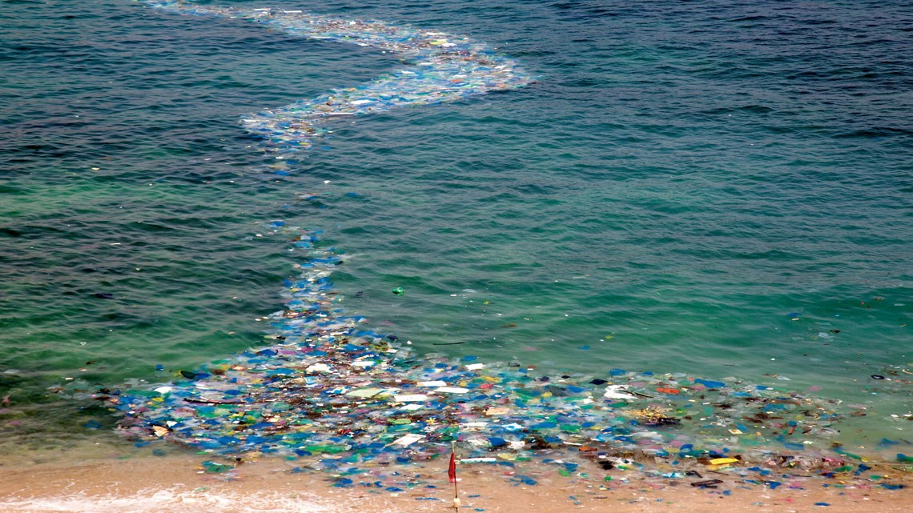
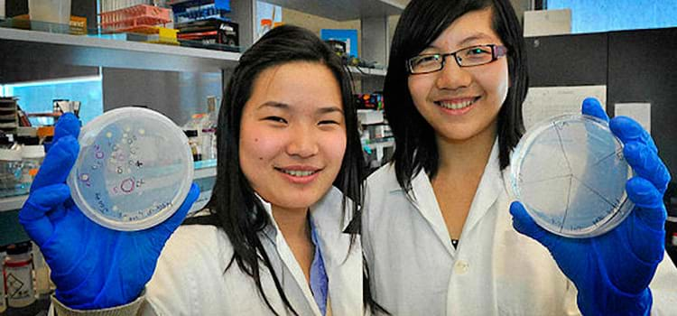
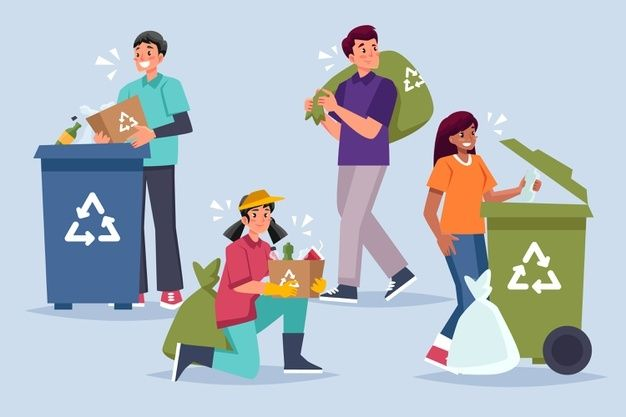
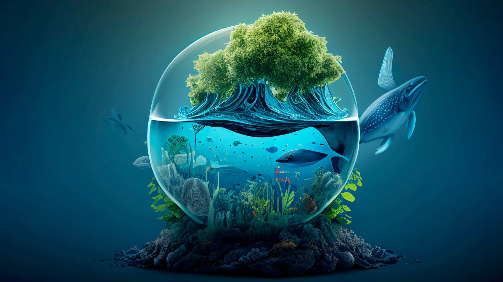

Notícias atualizadas de primeira mão!
Decomposição do plástico na água salgada ? Veja como isto funciona!


Em um estudo feito pelas cientistas Miranda Wang e Jeanny Yao, descobrimos que é possivel decompor, por meio de duas bactérias, o plástico dos oceanos
Não compartilhe notícias falsas!
Dicas para proteger o oceano:
- Não jogue lixo nas praias e nos oceanos
- Reduza seu consumo de plástico
- Separe seu lixo
- Não ajude empresas que poluem os oceanos
- Reutilize e recicle

Cuide do nosso planeta!
Noticias de fontes confiáveis!

Quer ajudar nosso planeta ? Compartilhe nossas informações
Não perca seu tempo pesquisando para achar notícias verdadeiras !